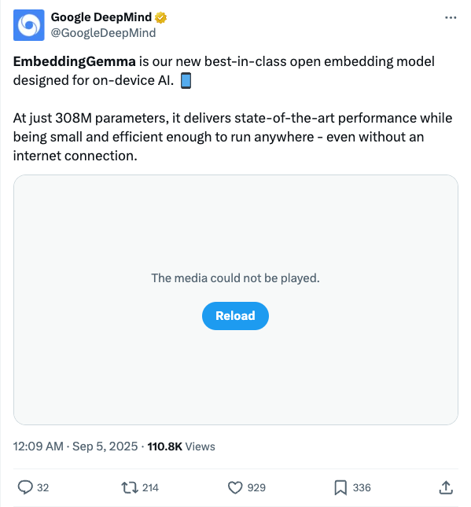

GoogleDeepMind_发布轻量级端侧AI嵌入模型EmbeddingGemma
发布时间: 2025-09-04T16:09:02.000Z Google DeepMind发布了其最新且领先的开放式嵌入模型EmbeddingGemma，专为端侧AI设计。该模型仅3.08亿参数，却能提供最先进的性能，同时体积小巧高效，可在无网络连接的情况下运行，实现随时随地部署。
2025-09-04
Google DeepMind发布了其最新且领先的开放式嵌入模型EmbeddingGemma，专为端侧AI设计。该模型仅3.08亿参数，却能提供最先进的性能，同时体积小巧高效，可在无网络连接的情况下运行，实现随时随地部署。

OpenAI宣布ChatGPT推出备受期待的对话分支功能。用户现在可以在不丢失原始对话主线的情况下，从特定节点探索不同的对话方向，从而更灵活地进行多路径探索或进行短时侧边提示对话，避免混淆上下文。该功能已面向网页版登录用户开放。
Groq公司宣布其首个智能体系统Compound已正式全面可用（GA），并可在GroqCloud上获取。该系统已通过超过10万名开发者和500万次请求的实战检验，证明其具备大规模生产能力，标志着Groq在智能体技术商业化方面迈出重要一步。

Gordon Wetzstein团队提出“上下文混合模型”（Mixture of Contexts），旨在解决长时间视频生成中内容漂移和历史上下文遗忘的问题。该模型能够直接生成长达一分钟的视频，且无需任何后期处理、拼接或编辑，实现了单次通过的无缝视频创作，标志着视频生成技术的重要进展。

知乎前沿推荐一篇关于高效强化学习训练的博客，深入探讨slime框架权重同步机制与服务器架构。该优化显著提升大型模型训练效率，将Qwen3-30B-A3B权重更新时间从60秒缩短至7秒，GLM4.5-355B-A32B更新在100秒内完成。团队正持续优化异步收集/发送等技术，旨在推动RL基础设施发展。
Gradio宣布推出新功能，用户现在可以通过一条简单的命令将强大的MCP服务器部署到Google Cloud平台。该功能内置队列，支持生产级工作负载的扩展，极大地简化了服务器部署流程，提升了效率和可扩展性。
清华大学与IDEA研究院提出GUAVA框架，仅0.1秒即可从单图生成逼真上半身3D化身，入选ICCV 2025。该框架克服了传统方法对多视角视频或单人训练的依赖，解决了ID一致性差、实时性不足等问题。GUAVA采用3D高斯表示，引入EHM模型捕捉细致面部表情，结合逆纹理映射技术，显著提升渲染质量与效率。实验证明，GUAVA在渲染质量、身份保持和实时动画（50 FPS）方面均优于现有2D和3D方法，为电影、游戏等领域提供高效解决方案。

本文介绍了一种新颖的自适应、内容对齐的上下文混合（MoC）层，用于长视频生成。MoC取代了扩散Transformer（DiT）中的密集注意力机制，以解决标准自注意力机制的二次计算成本问题。通过采用可学习的路由策略，结合top-k选择和内容感知的块划分，MoC显著降低了FLOPs超过7倍，并使长视频（如180k token）的端到端生成速度提升了2.2倍。它以与短视频相当的成本实现了分钟级视频生成，并在保持质量的同时，提升了运动多样性。该方法通过从数据中学习长期依赖关系，实现了可扩展和可控的长视频生成，为视频生成中涌现的长期记忆能力铺平了道路。

清华大学与北京航空航天大学联合发布BSC-Nav框架，旨在赋予具身智能体类脑空间认知能力，解决当前AI在复杂物理环境中缺乏长期结构化记忆的瓶颈。该框架受生物大脑空间记忆机制启发，通过地标记忆、认知地图和工作记忆模块，与多模态大模型深度融合，构建动态且可更新的空间记忆系统。实验证明，BSC-Nav在多项导航任务中性能显著超越现有方法，并在真实环境中展现出强大的泛化能力，能够理解复杂指令、进行主动具身问答，甚至完成如制作早餐般的多步骤移动操作任务。这项研究强调，记忆是具身智能从被动反应迈向主动认知的关键，为通用人工智能的发展提供了新范式。

英伟达最新研究指出，多数大型语言模型（LLM）应用难以盈利，且在Agentic AI系统中存在算力错配。论文《Small Language Models are the Future of Agentic AI》提出，参数量低于100亿的小型语言模型（SLM）因其成本效益、高效性及对重复、收敛任务的适应性，更适合作为Agentic AI的未来核心。研究发现，SLM在推理效率上比LLM便宜10-30倍，且更易于微调和端侧部署。英伟达通过实验证明，SLM可稳定承接Agentic AI中40%-70%的查询任务，并提供了将Agent系统从LLM迁移至SLM的六步转换算法，强调SLM在Agentic AI中的模块化、灵活性和成本优势，推荐了多款高性能SLM。
ICML 2025高分论文揭示，多模态大模型（MLLM）在处理“幼儿级”基础认知任务时存在显著盲区，如物体恒存、守恒理解等。研究通过创新性测评体系CoreCognition和“干预测试”方法Concept Hacking，系统性验证了主流MLLM普遍缺乏核心认知能力，且该能力无法通过简单扩大模型规模自然习得，甚至可能出现规模越大表现越差的反常现象。这表明当前以规模扩展为主的AI发展路径面临根本性挑战，模型并未建立稳固的认知体系，其高级推理能力并非基于扎实的基础认知。未来需探索在预训练阶段显式注入物理、空间等常识，或引入认知引导训练机制，以弥补这一核心缺陷，推动AI向通用智能发展。

Figure公司的人形机器人Figure 02在通用Helix架构下，继包裹分拣和衣物折叠后，成功学会了将餐具装入洗碗机。该机器人无需新的算法或特殊工程，仅通过增加新数据便掌握了分离堆叠餐具、精细抓取玻璃杯、适应杂乱初始状态及从失误中恢复等复杂技能。这展示了 Helix架构作为端到端“视觉-语言-动作”模型（VLA）的强大通用性和可扩展性，意味着同一系统通过数据驱动即可逐步学习广泛的新任务，标志着Figure在实现可扩展人形智能方面迈出了重要一步。
Bytebot是一个开源AI桌面代理，赋予AI一个完整的虚拟桌面环境，使其能像人类一样操作电脑。它能够使用任意应用程序、管理文件、登录网站、处理文档和执行复杂的跨程序多步骤工作流。该系统由虚拟桌面、AI代理、任务界面和API组成，支持Anthropic、OpenAI、Google Gemini等主流AI模型，并通过Docker容器化部署，提供数据隐私和高度定制化能力，适用于业务流程自动化、开发测试和研究分析等多种场景。
CrewAI是一个精简、快速的Python框架，专为多AI智能体编排设计，独立于LangChain等其他框架。它提供CrewAI团队（强调自主协作）和CrewAI流程（强调精确控制）两种核心机制，赋能开发者构建高度自治且可控的AI智能体。该框架支持企业级应用，提供实时追踪、可观测性、统一控制平面及高级安全功能，旨在将复杂业务流程转化为高效智能自动化，并拥有超过10万认证开发者的活跃社区支持。

TensorZero是一个开源堆栈，专为工业级LLM应用设计。它提供统一的LLM网关，实现对主流LLM提供商的低延迟访问。该平台集成了全面的可观测性、优化、评估和实验功能，支持生产指标收集、人工反馈、模型微调、提示工程以及A/B测试。TensorZero旨在帮助开发者构建高性能、可扩展且易于优化的LLM应用，确保其在生产环境中的可靠性和效率。

Elysia是一个基于决策树的智能体框架，旨在动态地使用工具以响应环境和上下文。它支持自定义工具，并预置了与Weaviate数据库交互的工具，实现高效的数据检索。该平台提供Python API和Web应用界面，用户可轻松配置API密钥和模型，适用于构建智能搜索、数据分析及定制化工作流等AI应用。

该GitHub仓库提供了一系列从零开始实现的Python机器学习模型与算法，旨在以透明和易于理解的方式展示其内部工作原理，而非追求极致优化。项目涵盖监督学习、无监督学习、强化学习和深度学习等多个领域，包括线性回归、决策树、K-Means、GAN、DQN等经典算法。通过丰富的示例，如多项式回归、CNN图像分类、DBSCAN聚类和生成手写数字等，该项目为学习者提供了深入理解机器学习核心概念的实践平台。

大型语言模型（LLMs）被寄予厚望，期望它们能超越简单的事实查询，进而执行深度研究任务—这类任务需要将问题分解为子问题、协调多步骤推理，并综合来自不同来源的证据。我们将具有可验证答案的深度研究任务形式化为层次约束满足问题（HCSPs），这与单约束、多跳或扁平的CSP形式截然不同。然而，现有基准（例如Natural Questions、HotpotQA）未能捕捉这种复杂性，而近期合成数据集常引入捷径推理、知识泄露或缺乏足够的结构深度。为弥补这一空白，我们引入了InfoSeek，一个可扩展的框架，用于合成复杂的深度研究任务。InfoSeek采用双代理系统，从大规模网页中递归构建研究树，将中间节点模糊化为有效的子问题，并将这些树转换为需要遍历完整层次结构的自然语言问题。它还支持快速扩展，生成了超过5万个训练样本、一个精选测试集，以及通过拒绝采样生成的推理轨迹。实验表明，在InfoSeek上训练的模型持续优于强基线。在一个具有挑战性的基准BrowseComp-Plus上，经InfoSeek优化的3B LLM超越了更大的32B模型和轻量级商业API（例如Gemini2.5-Flash），同时实现了与更强大的API（例如Gemini2.5-Pro）相当的性能。通过保留中间步骤和检索标签等元信息，InfoSeek进一步支持高级优化策略，包括复合奖励设计和轨迹级探索。我们已将代码和数据集发布在https://github.com/VectorSpaceLab/InfoSeek{此存储库}。

我们介绍了Robix，一个统一模型，它将机器人推理、任务规划和自然语言交互整合到单一的视觉-语言架构中。作为分层机器人系统中的高级认知层，Robix能为低级控制器动态生成原子命令，并为人类交互生成口头响应，使机器人能够在端到端框架内遵循复杂指令、规划长周期任务并与人类自然交互。Robix还引入了新颖的能力，例如主动对话、实时中断处理以及任务执行期间的上下文感知常识推理。Robix的核心在于利用链式思考推理，并采用三阶段训练策略：（1）持续预训练，以增强基础具身推理能力，包括3D空间理解、视觉接地和以任务为中心的推理；（2）监督微调，将人机交互和任务规划建模为统一的推理-行动序列；（3）强化学习，以提高推理-行动一致性和长周期任务的连贯性。广泛的实验表明，Robix在交互式任务执行方面优于开源和商业基线（例如GPT-4o和Gemini 2.5 Pro），在各种指令类型（例如开放式、多阶段、受限、无效和中断）和各种用户参与任务（例如餐桌清理、杂货购物和饮食过滤）中展现出强大的泛化能力。

语言模型（LMs）日益驱动着需要世界知识的现实应用。然而，模型将数据转化为世界知识和信念表示的内部过程却鲜为人知。深入了解这些过程可能为开发具有更一致、鲁棒和完整知识表示的语言模型铺平道路。为了促进对这些问题的研究，我们推出了LMEnt，一个用于分析语言模型在预训练期间知识获取的套件。LMEnt引入了：(1) 一个基于维基百科、完全标注实体提及的知识丰富预训练语料库；(2) 一种基于实体的预训练数据检索方法，其性能比现有方法高出80.4%；以及 (3) 12个预训练模型，参数量高达10亿，包含4000个中间检查点，在知识基准测试上表现与流行的开源模型相当。这些资源共同提供了一个受控环境，用于分析预训练中的实体提及与下游性能之间的联系，以及预训练数据中因果干预的影响。我们通过研究跨检查点的知识获取来展示LMEnt的效用，发现事实频率是关键，但不能完全解释学习趋势。我们发布LMEnt旨在支持对语言模型中知识的研究，包括知识表示、可塑性、编辑、归因和学习动态。

可验证奖励强化学习（RLVR）已成为数学推理任务的主导范式，为推理能力带来了稳定的提升。然而，RLVR 中的结果奖励模型（ORM）过于粗粒度，无法区分正确答案中的缺陷推理或错误答案中的有效推理。这种粒度不足显著引入了噪声和误导性梯度，阻碍了推理过程质量的进一步发展。尽管过程奖励模型（PRM）为中间步骤提供了细粒度指导，但它们经常存在不准确性，并且容易受到奖励欺骗的影响。为了解决这一困境，我们引入了过程一致性过滤器（PROF），这是一种有效的数据处理筛选方法，它将噪声的细粒度过程奖励与准确的粗粒度结果奖励进行协调。PROF并非简单地在目标函数中混合PRM和ORM，而是通过一致性驱动的样本选择来利用它们的互补优势。我们的方法保留了具有较高平均过程值的正确响应和具有较低平均过程值的错误响应，同时保持了正/负训练样本的样本平衡。大量实验表明，与混合方法相比，我们的方法不仅最终准确率持续提高了4%以上，而且还增强了中间推理步骤的质量。代码和训练方案可在 https://github.com/Chenluye99/PROF 获取。

有效的规划需要强大的世界模型，但能够理解并推理具有语义和时间抽象动作的高级世界模型仍处于发展初期。我们引入了视觉语言世界模型（VLWM），这是一个在自然视频上进行基于语言的世界建模训练的基础模型。给定视觉观测，VLWM首先推断整体目标达成情况，然后预测由交错动作和世界状态变化组成的轨迹。这些目标是通过迭代的LLM自优化（基于由字幕树表示的压缩未来观测）提取的。VLWM学习了动作策略和动力学模型，分别促进了反应式系统1规划解码和通过成本最小化实现的反射式系统2规划。成本评估了VLWM推演出的假设未来状态与预期目标状态之间的语义距离，并通过我们自监督训练的评论模型进行衡量。VLWM在基准评估和我们提出的PlannerArena人工评估中，均在辅助视觉规划（VPA）方面取得了最先进的性能，其中系统2比系统1的Elo分数提高了27%。VLWM模型还在RoboVQA和WorldPrediction基准测试中超越了强大的VLM基线。

多主体个性化生成在合成基于多个参考主体的图像时，在保持身份保真度和语义连贯性方面面临独特的挑战。现有方法由于未能充分建模不同主体在共享表示空间中应如何交互，常常遭受身份混合和属性泄露的问题。我们提出了MOSAIC，一个以表示为中心的框架，通过显式语义对应和正交特征解耦来重新思考多主体生成。我们的关键见解是，多主体生成需要在表示层面进行精确的语义对齐—即精确地知道生成图像中的哪些区域应关注每个参考主体的哪些部分。为此，我们引入了SemAlign-MS，这是一个精心标注的数据集，提供了多个参考主体与目标图像之间细粒度的语义对应关系，这在该领域以前是缺失的。在此基础上，我们提出了语义对应注意力损失，以强制实现精确的点对点语义对齐，确保从每个参考到其指定区域的高度一致性。此外，我们开发了多参考解耦损失，将不同主体推入正交的注意力子空间，从而防止特征干扰，同时保留个体身份特征。大量实验表明，MOSAIC在多个基准测试中取得了最先进的性能。值得注意的是，尽管现有方法在超过3个主体时性能通常会下降，但MOSAIC在4个或更多参考主体的情况下仍能保持高保真度，为复杂的多主体合成应用开辟了新的可能性。